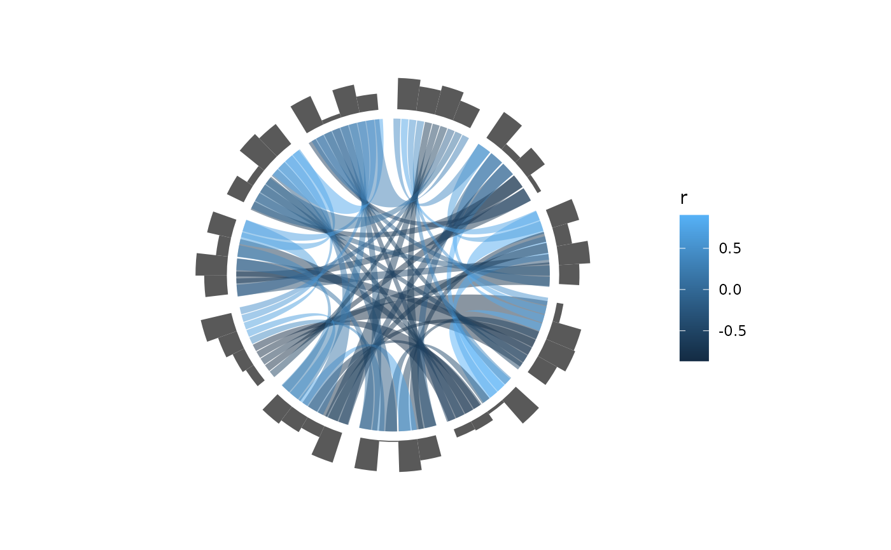
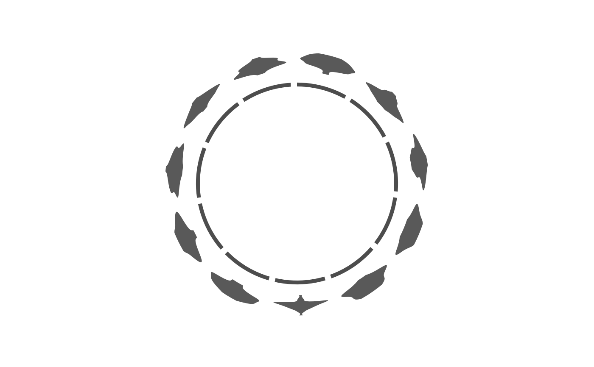
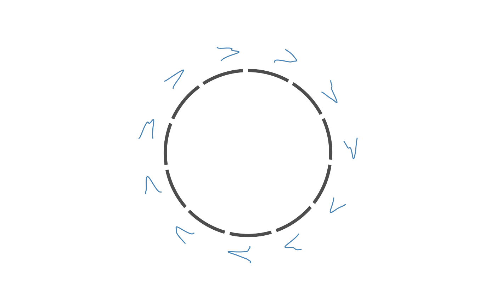

A track is an ordinary ggplot2 layer whose angle comes from the plot's
layout and whose radius is scaled into a declared radial band. Node ids
are translated to angles when the layer is added; the scale factors live
in a position_track() position, so the same normalisation is reused by
every track and can be applied by hand to your own geoms.
Usage
geom_track(
mapping = NULL,
data = NULL,
...,
geom = "col",
node = NULL,
value = NULL,
band,
stack = FALSE,
scales = c("free", "fixed"),
limits = NULL,
baseline = NULL,
width = 0.9,
offset = 0,
position = NULL,
slot = NULL,
domain = NULL,
origin = 0,
na.rm = FALSE,
show.legend = NA,
inherit.aes = FALSE
)Arguments
- mapping, data, show.legend, inherit.aes, na.rm, ...
Standard
ggplot2::layer()arguments.- geom
Which track geometry to use:
"col"/"bar"(anchored at the band's inner edge),"area","boxplot","violin","density","point","tile"or"text". The last three sit at the band's centre when noxis mapped; with anxthey land at the scaled value, the way a bar's outer edge does."violin"and"density"both put a node's density along its arc, with the value along the radius:"violin"fills the outline,"density"draws it as an open curve, so several distributions can share a band without covering each other. Both taken,adjustandtrim, passed tostats::density()(see...).- node
Unquoted name of the column holding node ids. Required.
- value
Unquoted name of the column holding the values to plot, e.g.
value = gc. Optional (aes(x = gc)also works), but it is the robust spelling:valueis handed to the position directly, so it keeps working when the data has a column literally calledxand it makesstackable to reject negative input instead of silently drawing a flat track.- band
Either a declared track name (see the
tracksargument ofggcircos()) or an explicitc(r0, r1)radius interval.- stack
Stack values within each node instead of scaling them independently. Values must then be non-negative. Not available for the aggregating geoms (
"boxplot","violin","density"), whose stat has already folded each node into one mark.- scales
"free"normalises each node against its own range;"fixed"useslimitsfor every node.- limits
Value range of the track; required when
scales = "fixed".- baseline
Lower bound when
scales = "free". By default0if all values are non-negative, else the smallest value.- width
Fraction of a node's arc covered by the layer.
- offset
Distance from the band's inner edge. Only meaningful when
bandis an explicit interval.- position
A
position_track()object.NULL(the default) builds one from this layer'sband/stack/scales/limits/nodearguments; pass an existing one to reuse the same normalisation across layers (see the escape hatch underposition_track()). When given, those settings come from the position, not from this call.- slot
Optional: a column of the track data holding the link row number (
edge_id) each row belongs to. Given it, the row occupies the arc that its link's slot occupies – a track drawn per link sits exactly on the link's foot, the way circlize's per-link annotation rectangles do (spec §4.10). Without it, a node's rows split its arc evenly.- domain
Optional: a node-table column holding each node's coordinate ceiling – the top of its axis, the way a chromosome length runs
0 .. length. Only used by interval tracks (aes(xmin = start, xmax = end)), where it decides the scale a node'sstart-to-endrange is normalised against, per node. Without it each node is scaled to the largestxmaxits own rows report.This is the maximum, not the span: giving
max(xmax) - min(xmin)puts intervals past the top of their own axis, and that is rejected rather than drawn flat.- origin
Lower bound of the interval coordinates,
0by default. Give1for a 1-based coordinate system.
Normalisation
With band [r0, r1] and per-node scale "free", a value v maps to
r0 + (r1 - r0) * (v - base) / (max - base), where base is baseline.
With "fixed", base and max are limits. With stack = TRUE, values
are converted to within-node fractions first. "boxplot" maps its
xmin/xmax quantiles through the same affine map; anchored geoms
stretch from r0 to the mapped value. "violin" and "density" map the
values they sampled the density at, so the distribution is turned sideways
inside the band: broad where the samples pile up, narrow where they thin
out.
Examples
set.seed(1)
vals <- data.frame(
id = rep(colnames(mtcars), each = 4),
value = runif(ncol(mtcars) * 4),
stringsAsFactors = FALSE
)
ggcircos(cor(mtcars), order = "hclust", tracks = c(values = 0.2)) +
geom_chord(aes(fill = r)) +
geom_track(data = vals, aes(x = value), node = id, geom = "col", band = "values")

# a violin: several samples per node, the density spread along the arc
set.seed(2)
samples <- data.frame(
id = rep(colnames(mtcars), each = 40),
value = rnorm(ncol(mtcars) * 40, 0.5, 0.1),
stringsAsFactors = FALSE
)
ggcircos(cor(mtcars), order = "hclust", tracks = c(dist = 0.3)) +
geom_node_arc() +
geom_track(data = samples, aes(x = value), node = id,
geom = "violin", band = "dist")

# the same density as an open curve, for comparing several nodes in one band
ggcircos(cor(mtcars), order = "hclust", tracks = c(dist = 0.3)) +
geom_node_arc() +
geom_track(data = samples, aes(x = value), node = id,
geom = "density", band = "dist", colour = "steelblue")
